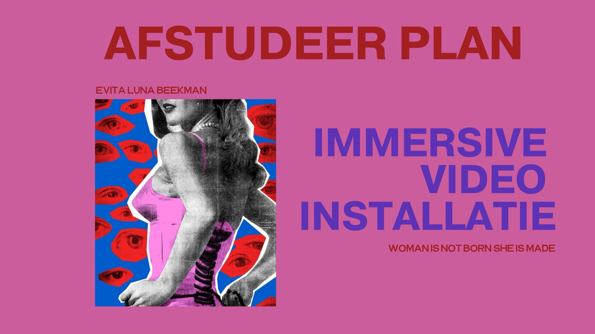
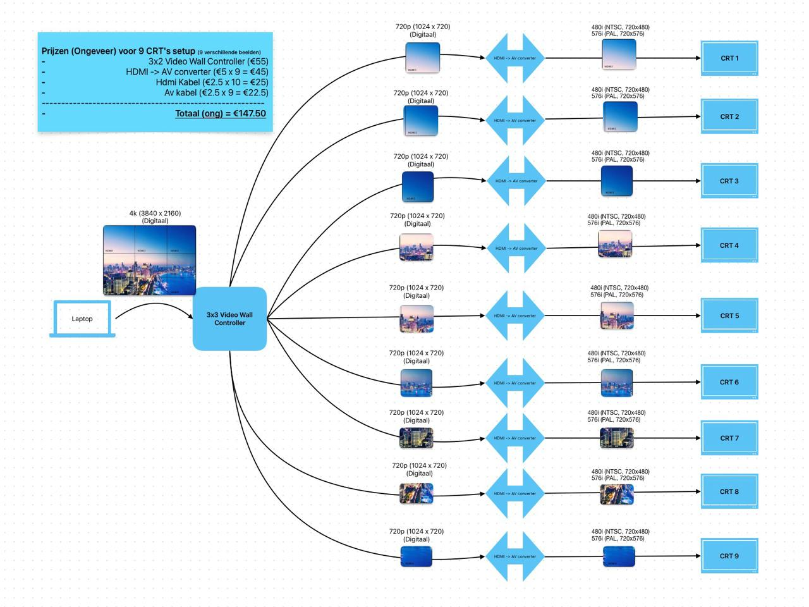
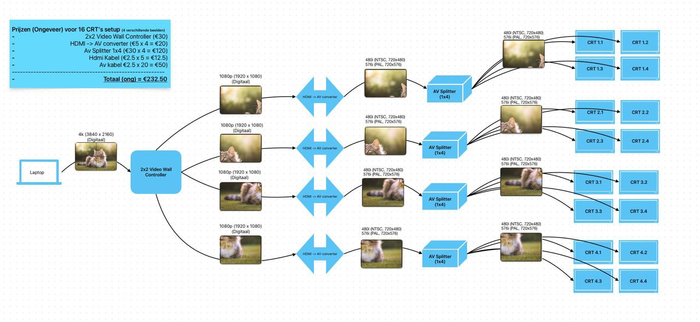
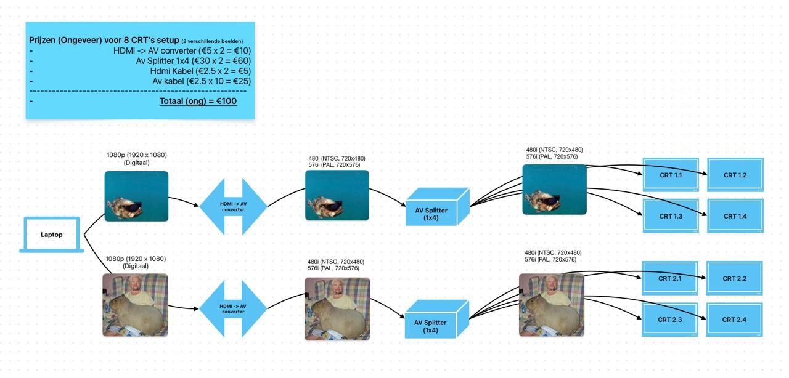

JONG-SLANK-WIT
JONG-SLANK-WIT is an immersive video installation by HKU film student Evita Luna Beekman, made as her graduation project. In a room full of stacked TVs and a large projection, a girl is slowly swallowed by the ‘perfect’ images of visual culture: a work about how that culture shapes women’s self-image.
I did the technical side: signal-flow diagrams, an equipment list, and building and running the content. Every TV needed its own image, so from my proposals we chose two 3×3 video-wall splitters that spread two 4K signals over 18 TVs, each converted to analogue with an HDMI-to-AV adapter. It was shown at Exposure, the HKU graduation festival.
Below are some of the setup schematics I sketched for her as suggestions.



